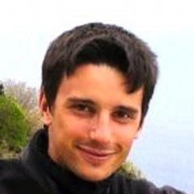

In this talk we will discuss designing systems on Erlang VM. One of the reasons the Elixir language attracts the attention of developers is the fact that they have to solve certain types of problems arising in concurrent systems. We will take a look at the real tools Erlang VM gives you to write highly-available systems that let you sleep through the night: dynamic tracing and remote REPL. We'll see how these tools are used.
Target audience:
- Attendees should be familiar with functional programming, actor based concurrency, pattern matching, dynamic typing, TCP/IP.
Description
Hands-on workshop for developers with no prior experience in OTP and Elixir, which aims at building a simple client-server architecture using Elixir/OTP and real tools like telnet or curl.
Details
The workshop has several steps, each one requiring a short introduction followed by a programming exercise for the audience. If one gets lost, but would like to continue to the next step, they can switch to the next git branch. All branches will be published on github.com.
At the end of the workshop attendees will have a fully functional Elixir TCP server that can be tested using telnet or curl.
Prerequisites
Participants may want to install Erlang runtime and Elixir before attending the workshop so that they can implement exercise themselves.
Michał Ślaski started programming in Erlang at the AGH - University of Science and Technology in Krakow, Poland, when working on his Masters prototyping massively multiplayer online games. After graduating, he joined Erlang Solutions on key projects around the world. He is currently heading Erlang Solutions' new Krakow office in Poland, keeping the Erlang flag up high.